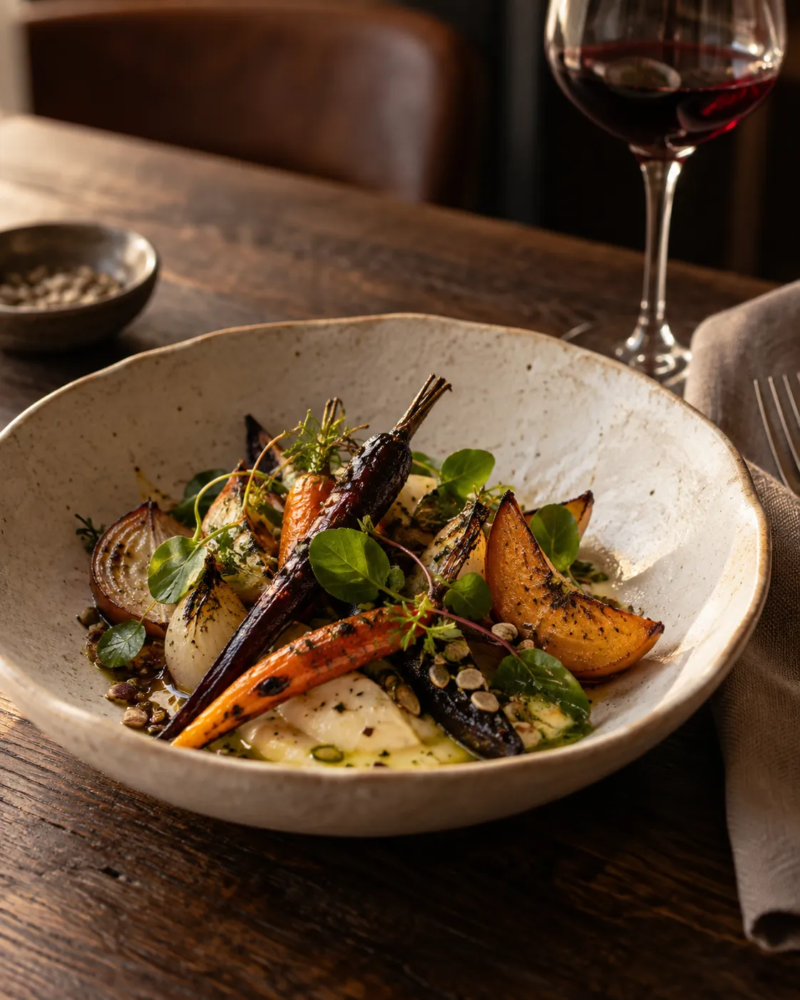
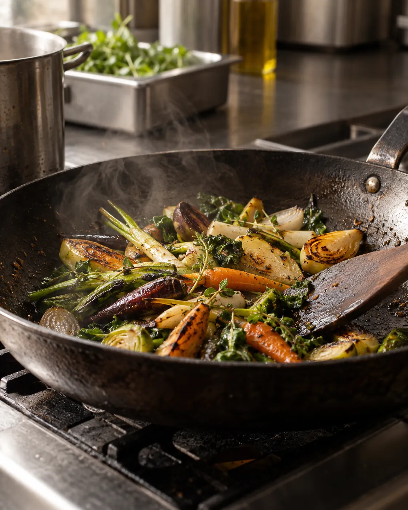
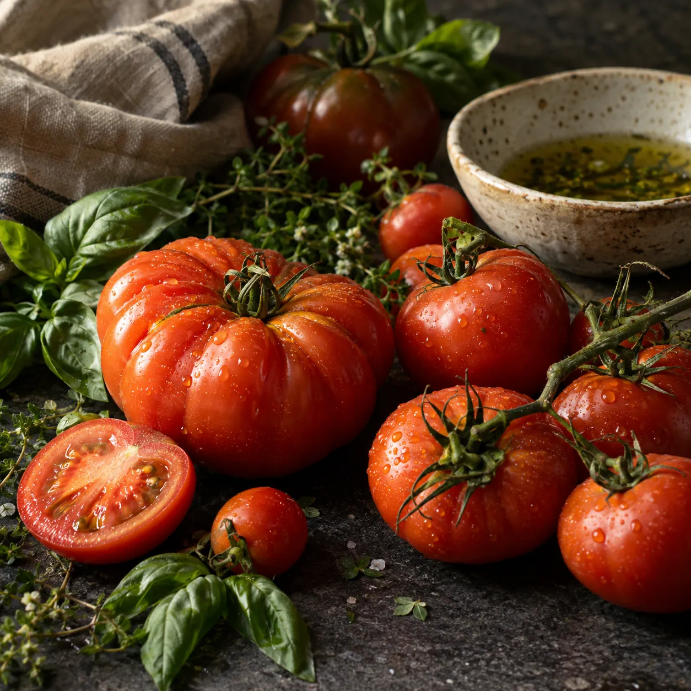
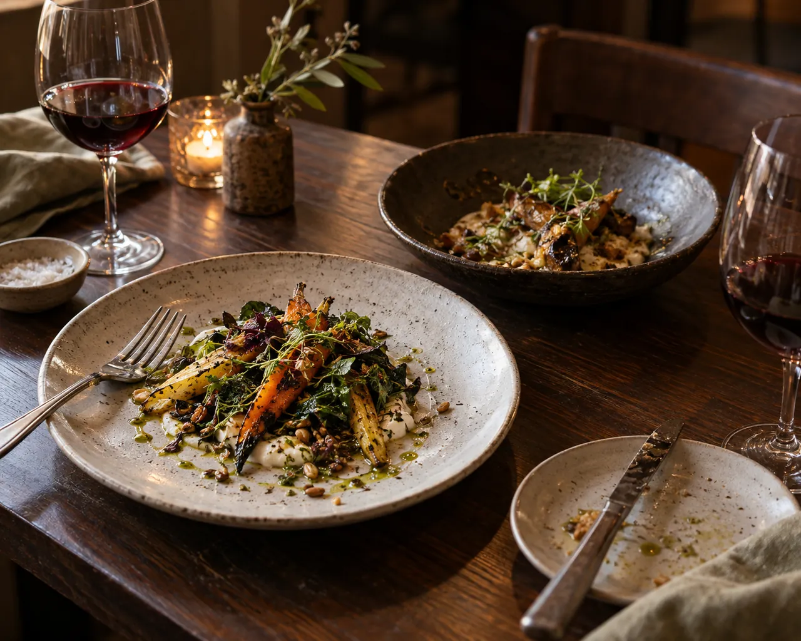
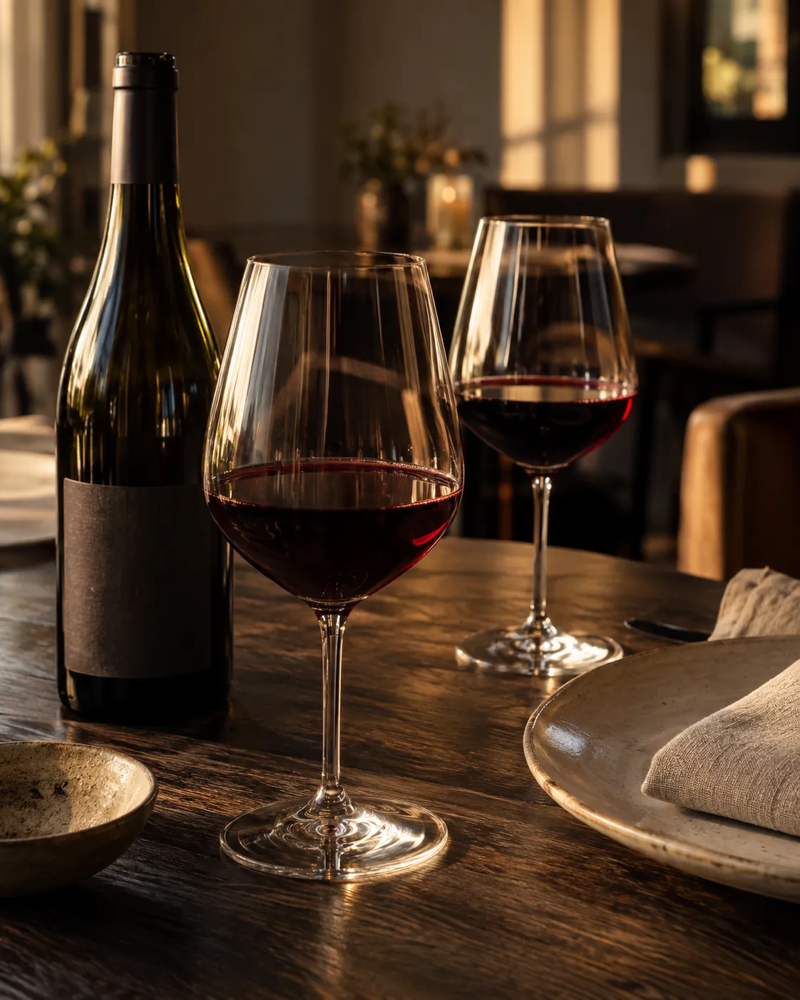

Ingredientes da estação
O cardápio acompanha a estação e o frescor dos ingredientes.
Pinheiros · São Paulo
Cozinha contemporânea e sazonal, com ingredientes frescos e atenção aos produtores locais.
Lucas Dante, na cozinha.
Gabrielli Fleming, na sala e no vinho.

A casa
Lucas Dante conduz a cozinha do Cepa, com ingredientes frescos e pratos que acompanham a estação.
Gabrielli Fleming está à frente da sala e do serviço de vinhos.


O jeito de cozinhar
O cardápio acompanha a estação e o frescor dos ingredientes.
Esses processos fazem parte da cozinha de Lucas Dante.
O Cepa valoriza pequenos produtores locais.
À mesa
O cardápio acompanha a estação e a disponibilidade dos ingredientes.

Os pratos podem mudar. Consulte a casa para conhecer o cardápio do momento.
Sala & vinho
Gabrielli Fleming conduz a sala e seleciona vinhos orgânicos e biodinâmicos para a adega.

Em Pinheiros
Reconhecimento
Visite o Cepa
Para reservar, entre em contato com a equipe pelo WhatsApp.
A reserva é confirmada pela equipe do Cepa.
| Segunda | Fechado |
|---|---|
| Terça a quinta | 19h às 23h |
| Sexta e sábado | 12h às 16h e 19h às 23h |
| Domingo | Fechado |
Confirme os horários com a equipe ao reservar.
Cepa · Pinheiros
Proposta de site para o Cepa. Imagens ilustrativas.